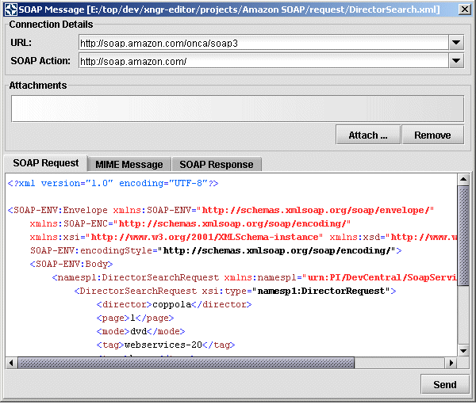
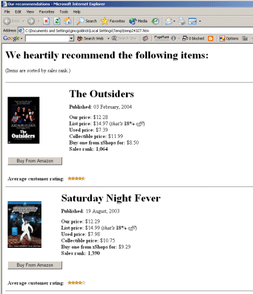

Open the Amazon SOAP project and from the request folder, open the file DirectorSearch.xml (Alternatively, you can open the file directly from projects/Amazon SOAP/request/DirectorSearch.xml.)
Ensure that you are connected to the internet
Choose Tools->Send Soap Message, select Current Document and press Open.
Figure 1. Send SOAP Message
The file is displayed in a pop-up window in the Soap Request tab. Now, in the Connection Details section of the dialog, enter the URL as http://soap.amazon.com/onca/soap3 and the SOAP Action as http://soap.amazon.com/ and press Send.
The returned content is displayed in the Soap Response tab in the dialog. Press Format to make the response easier to read and check to ensure that a server error has not occurred. (The Amazon web service can be busy, especially during US work hours - if the call fails, close the new document window and try again.)

Figure 2. SOAP Response
Now press Edit to open the response as a new document in the editor. (A local copy of the response can be found in the response folder in the Amazon SOAP project.)
To display the returned information in a web browser, ensure that the new document is the active document in the editor and then execute a transformation as follows: Select Transform->Execute Advanced XSLT.
In the Execute XSLT dialog:
Set the XML Location to Current Document
Set the XSL Location in From URL: as projects\Amazon SOAP\style\heavy-data-to-html.xsl
Set the Output for "To New Document" and check the box for "Open Output in Browser"
Press the Execute button.
A list of the top 10 films by Francis Ford Copolla should be displayed. (A local copy of the result can be found in the html folder in the Amazon SOAP project.)
Figure 3. Amazon Response in Browser
The Tools->Send Soap Message functionality also supports SOAP With Attachments. Open the SOAP Request as in the preceding example, and in SOAP Message dialog, press the Attach... button and select any arbitrary file to be attached to the SOAP message. Now click on the Mime Message tab and see how the SOAP message now contains both the original request and the attachment.

Figure 4. MIME Message
Further attachments can be added using the Attach... button and removed using the Remove button and the MIME message will be updated dynamically. Unfortunately we currently know of no public services that will accept SOAP with Attachment messages and pressing Send will result in an error if you use the Amazon Web Service. However, it should be possible to build up a sample ebXML message with attachments given the current functionality in Exchanger XML Editor.